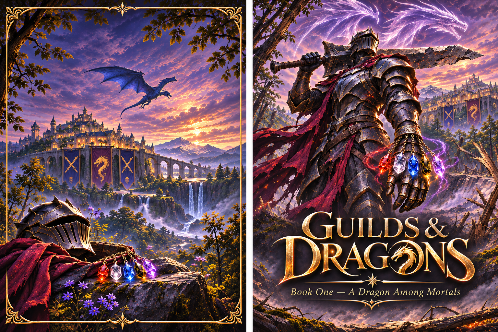
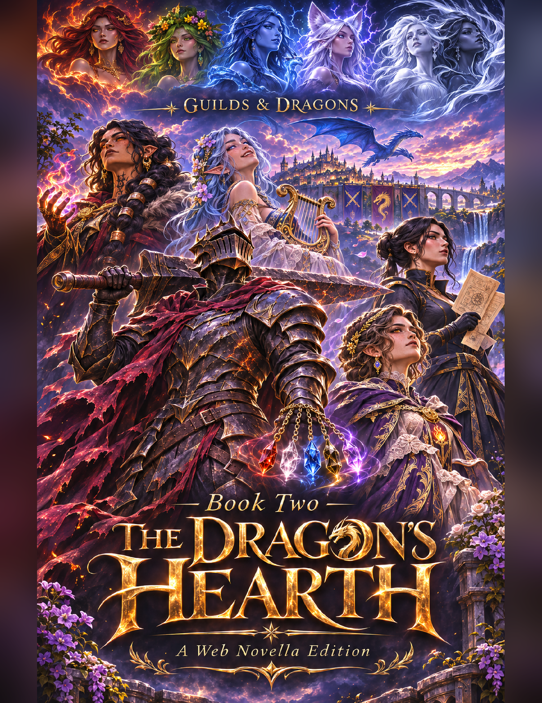

Novella 01
A Dragon Among Mortals
Book One of Guilds And Dragons. Read the complete novella online or download a copy to enjoy offline.

Tales from the Dragon Den
Sent to understand mortal lives, the dragon Shade takes human form and joins an adventurers’ guild in the world of Aleris. What begins with monster hunts and guild jobs grows into a story of friendship, romance, and building a home—while navigating the demands of gods, the Fey, and his own draconic family.
Explore the novellasAn original webnovella series

The collection
Two novellas in the series so far. Explore the collection below.
Novella 01
Book One of Guilds And Dragons. Read the complete novella online or download a copy to enjoy offline.

Novella 02
Book Two of Guilds And Dragons. Continue the series online or download the complete novella to read offline.